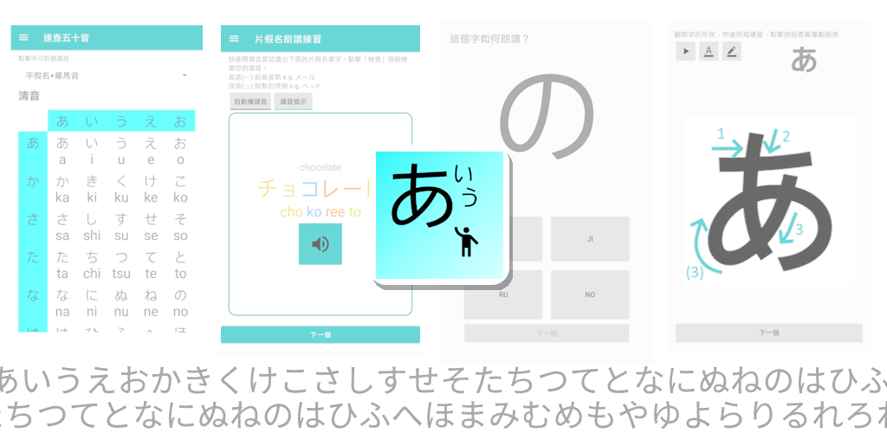

(Last updated on 2024/10/18) Among the numerous channels for learning Japanese, we have specially selected an excellent Japanese learning app that can help you master Hiragana and Katakana, and provide assistance on your journey of self-learning Japanese. Regardless of your current level of Japanese proficiency, this app will become a helpful assistant on your self-study path, making learning Japanese more easy and enjoyable!
The way of learning Japanese is undergoing a revolution. With the rapid development of technology, the mode of language learning is also changing. Among the numerous learning methods, using apps designed specifically for learning Japanese has become the preferred choice for modern people. These applications not only provide high flexibility but also can customize learning plans according to individual needs, making Japanese learning more efficient and interesting through rich interactive exercises and real-time feedback. Wherever you are, as long as you have a phone in hand, you can learn Japanese anytime, anywhere. This learning method is particularly suitable for modern busy lifestyles, allowing learning Japanese without being limited by time and location.
An easy-to-use beginner app: KanaSpeed
Not familiar with Japanese hiragana, katakana, kanji, voiced sounds, and contracted sounds? Hear a Japanese word but can't quickly recall its pronunciation and writing? Don't have suitable copybooks for reference and practice? Can't seem to remember how to memorize the gojūon (Japanese syllabary) on your own? Wondering how to learn Japanese with the gojūon on your own?
Through comprehensive teaching methods like silent reading, reading, writing, pronunciation exercises, providing copybook cards for writing practice, complete gojūon charts in gojūon order, pronunciation hiragana and katakana tables for reference, these charts and teaching materials deepen your understanding and memory of the gojūon. The gojūon is like the alphabet of Japanese. You don't need to memorize to learn Japanese. After mastering the gojūon, you will easily grasp the Japanese language! Through basic silent reading and stroke-writing exercises, enhance your memory and writing skills, making self-study of Japanese easy and quick.


【Features of "KanaSpeed"】
1. Complete list of the fifty sounds: Provides a complete chart of the fifty sounds, including both Hiragana and Katakana tables, clearly presenting all 50 sound letters, including the writing and pronunciation of the fifty Japanese syllables, as well as the corresponding Hiragana and Katakana, and their voiced, semi-voiced, and contracted sounds, allowing you to quickly view and learn on your own, quickly mastering the pronunciation and writing of each syllable.
2. Kana calligraphy of the fifty sounds: Provides stroke teaching and exquisite calligraphy sheets, allowing you to easily memorize the writing forms of each letter by practicing writing strokes on the calligraphy sheets, with pronunciation and stroke guidance provided while writing, preparing for future dictation.
3. Recognizing the fifty sounds of Kana: No need to memorize mnemonics, gamified practice modes, combined with a complete Kana table for comparison, allow you to quickly recognize Hiragana and Katakana, self-study to distinguish the correct pronunciation of each Japanese sound. No Japanese keyboard required.
4. Kana dictation of the fifty sounds: After practicing on calligraphy sheets, you can practice dictation through memorization, allowing you to more fully and deeply memorize Japanese Kana and become familiar with the writing forms and pronunciation of the fifty sounds, enhancing your recognition and familiarity with writing through dictation.
5. Quiz: Tests your basic familiarity with the fifty sound letters, through dictation and writing practice.
"KanaSpeed" helps you build a solid foundation in Japanese even when self-studying, quickly mastering the basics and achieving your Japanese learning goals!
Application Name: KanaSpeed
Target audience: Beginners of Japanese
Language: English, with multilingual support
Recommendation rating:
Download link: Google Play link

No matter if you are a child or a student, learning Japanese by yourself or guided by a Japanese teacher, this software allows you to learn Japanese without memorization. It is a must-have self-learning Japanese study tool for Japanese beginners like you! After downloading this simple software "KanaSpeed", stroke order, character writing, copying, recognition, and listening to pronunciation will help you quickly become familiar with the 50 basic kana characters!